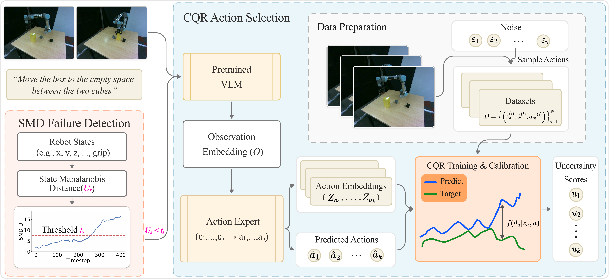

Vision-language-action (VLA) models have emerged as generalist robotic controllers capable of mapping visual observations and natural language instructions to continuous action sequences. However, VLAs provide no calibrated measure of confidence in their action predictions, thus limiting their reliability in real-world settings where uncertainty and failures must be anticipated. To address this problem we introduce ReconVLA, a reliable conformal model that produces uncertainty-guided and failure-aware control signals. Concretely, our approach applies conformal prediction directly to the action token outputs of pretrained VLA policies, yielding calibrated uncertainty estimates that correlate with execution quality and task success. Furthermore, we extend conformal prediction to the robot state space to detect outliers or unsafe states before failures occur, providing a simple yet effective failure detection mechanism that complements the action-level uncertainty. We evaluate ReconVLA in both simulation and real robot experiments across diverse manipulation tasks. Our results show that conformalized action predictions consistently improve failure anticipation, reduce catastrophic errors, and provide a calibrated measure of confidence without retraining or modifying the underlying VLA.
If you find this project useful, then please consider citing both our paper and dataset.
@article{lyu2026reconvla,
title={ReconVLA: An Uncertainty-Guided and Failure-Aware Vision-Language-Action Framework for Robotic Control},
author={Lyu, Zongyao, Chen, Lingling, and Beksi, William J.},
journal={TBD},
year={2026},
}The source code associated with this project is licensed under the Apache License, Version 2.0.